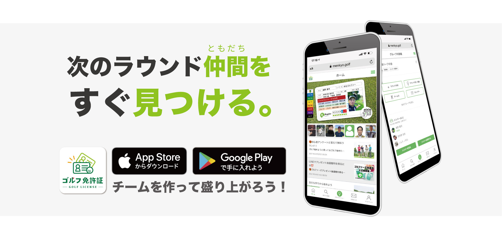
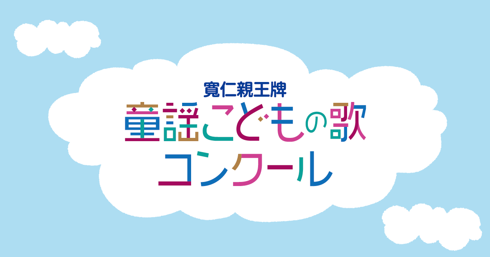
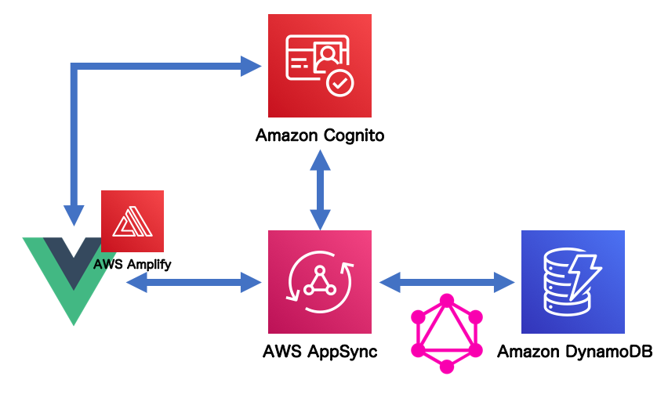
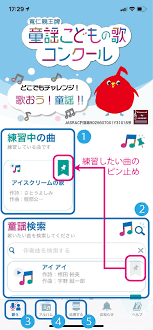

PORTFOLIO
トップ
このサイトについて
自己紹介
実績
スキル
プロフィール
連絡先
トップ
このサイトについて
自己紹介
実績
スキル
プロフィール
連絡先
Shoichiro Osada
This is osada portfolio
Scroll
ABOUT THIS PAGE
はじめまして。こちらはエンジニア『長田』のポートフォリオページです。
これまでの作成した成果物や得た知識を知って頂きたいと思い作成致しました。
お時間のある限りゆっくりとご覧ください。
ABOUT ME
東京都目黒区出身のエンジニア。
高校3年生にプロボクサーライセンスを取得。プロボクサーの側、飛び込みの営業を行い生計を立てる。
プロボクサー引退後は、プロテインブランドの起業を経験。
その後独学でiOSアプリ開発を行い、その経験を生かし2020年にアプリケーション受託開発をメインとするITベンチャー会社にてプログラマーとしてのキャリアをスタート。
フロント/バックエンド、DB,サーバーサイド、iOS,Androidと幅広く開発経験を積み、現在はフルスタックエンジニアとして就業中。
WORKS
これまでに手掛けた成果物を紹介します。

ゴルフ免許証アプリ

童謡こども歌コンクールアプリ

サーバーレスチャットサンプルアプリ
PortFolioサイト
SKILL SET
これまで実務で身につけたスキルをグラフにしました。フロントエンドからバックエンドまで幅広く実務をこなし、スキルを積んできました。 その結果、担当外サイドメンバーとの連携がスムーズになり、開発スピードが上がりました。 また、PLとしてプロジェクトを任された際にはメンバーマネージメントに大きく役立ちました。 その分、器用貧乏感が否めず、専門性が低い事を意識しています。今後はバックエンド、サーバーサイドの開発に携わる機会を増やし、専門性を高めていきたいと考えています。
Front-end
HTML
CSS
Nuxt.js
jQuery
Back-end
PHP
MySQL
Python
Swift
Kotlin
Dev-ops
AWS
Git/GitHub
Linux
Apache
PROFILE
今まで歩んだ道のりをまとめました。お時間があれば一緒に振り返りましょう。
1998年~
(誕生)
東京都目黒区で産声を上げました。
重い喘息を患っていましたが、水泳で克服しました。
将来の夢はお坊さんでした。
2011年~
(中学時代)
バスケットボール部で部長をしていました。 部員5人の超弱小で1度も試合で勝てませんでした。
2014年~
(高校時代)
五反田のワタナベボクシングジムの練習生になりました。
高校3年生でプロテストに合格。
2017年~
(高校卒業後)
父の会社が倒産。
大学に通えずプロボクサーとして生きる事を決意。
同時に飛び込みの営業を業務委託で始めました。
営業が肌に合っていたのか、楽しく充実した毎日でした。
2018年秋~
(ボクサー時代)
東日本新人王トーナメントに出場。 準決勝で敗れ、6戦5勝の戦績でプロボクシングを引退しました。
2018年冬~
(起業)
ボクシングを引退後、プロテインブランドを営業仲間と立ち上げました。
右も左も分からない状態で必死に働きました。
2020年~
(IT転職)
起業仲間との方向性の違いにより、会社が解体。
地道に続けていた独学のプログラミング技術を活かして現在就職中のITベンチャーに転職しました。
CONTACT
最後までご覧頂きありがとうございました。
このサイトを通して少しでも私の事を知って頂けたのなら嬉しいです。
私やこのサイトの内容についてご質問やコメントがあれば、下記フォームをご利用ください。
Name
E-mail
Message
SEND
ゴルフ免許証アプリ
ゴルフ好き専用のSNS WEB,iOS,Androidアプリケーションです。 自社アプリとして開発を行い、4人チームのPLを勤めていました。
WEBアプリのフロント/バックエンド、DB設計、サーバー管理と全ての開発に携わり、プロジェクトを通じてDBやAPIの設計、PLとしてのメンバーマネージメントについて経験を積めました。
また、iOSアプリに関しては1人で開発からリリースまで行いました。
一部機能を作成する為にPythonでのスクレイピング、DBデータ操作のスクリプトも作成しました。
使用言語など
・HTML ・SCSS ・vue.js(Nuxt.js) ・PHP(cakephp) ・Python
・AWS(EC2,S3,CloudFront,RDS)
・Git ・GitHub
・MySQL
童謡こども歌コンクールアプリ
動画の撮影、音声の録音、データの送信（応募）が可能なiOS,Androidアプリケーションです。
Androidの開発をKotlinで行いました。応募機能をメインで開発し、KotlinでのAPI送信、XMLでのレイアウト作成の技術を身につけました。
使用言語など
・Kotlin ・XML
・Git ・GitHub
・AndroidStudio

チャットサンプルアプリ
翌月より始まる予定だったプロジェクトの事前検証の為、AWSリソースを使用したサーバーレスチャットサンプルアプリを作成しました。
フロントエンドにはNuxt.jsをAmplifyライブラリを使用しました。
サーバーサイドはAPIにGraphQLを使用する為AppSyncを、DBはDynamoDBを使用しました。
また、チャットにアプセス制限を儲けるため、AWSのCognitoを使用しました。
全て一からAWSリソースを構築した為、本プロジェクトを通じてAWSへの理解が深まりました。
使用言語など
・Nuxt.js ・HTML ・CSS ・GraphQL
・AWS (AppSync,Amplify,Cognito,DyanmoDB,SQS,Cloud9,Lambda)
ポートフォリオ
現在ご覧になっているポートフォリオページです。
UI部分を自分で考え作成する事が初めてだったので、なかなか苦戦しました。
AWSのS3を使用して表示させています。
「連絡先」セクションのメールの送信にはAWSのLambdaにてPythonを使用して実装しました。
ページを作成する中で様々な面白いjQuery,cssのライブラリと出会えました。
また時間のある際にアップデートしていきたいと思います。
使用言語など
・・HTML ・CSS ・jQuery
・AWS (S3,Lambda)
閉じる